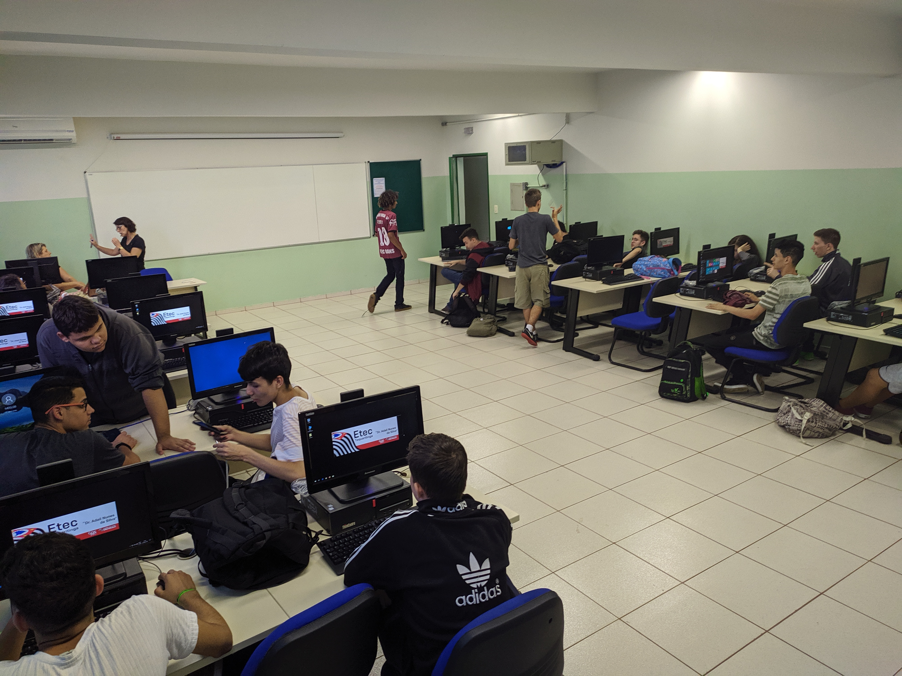

PROFESSORES E ALUNOS
Diferente de outras escolas, os laços formados durante o Técnico Integrado com o Ensino Médio(ETIM) são . Você terá total apoio de seus professores e um grande
contato com os alunos de 2º e 3º módulo de Informática, e isso não se estringe apenas ao curso de Informática, todos as Etecs de nosso país prezam para que a experiência de
seus cursos seja memorável.
Conheça alguns dos professores do Curso de Informática e veja algumas fotos dos alunos que estão cursando ela (seus futuros veteranos, lol):
Carla
|
Renato
|
Luciana
|
Luciano
|